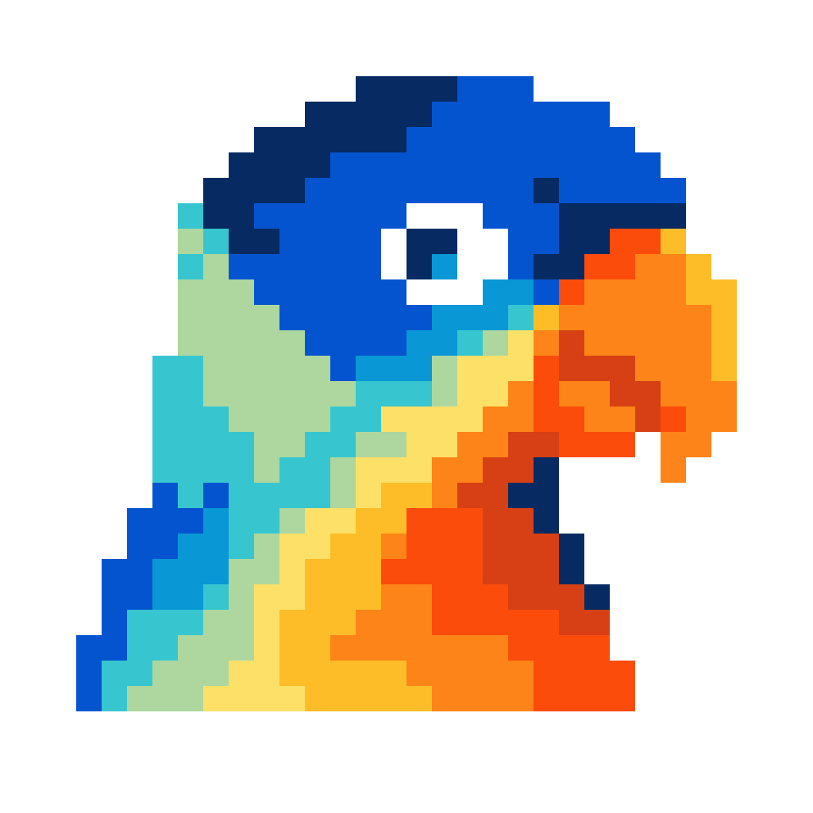

Solar access hours against the Apartment Design Guide, shadow diagrams, site and context analysis and the area calculation, drawn straight into your Archicad project as native sheets, fills and schedules. No export to another program, no hand-typed table.

Loriini is a Windows program and an Archicad 26 add-on. It reads the open project, works out the sun, and writes what it finds back into Archicad as the things Archicad already knows: Zone properties, fills, worksheets, 3D Documents, layouts.
Hours of direct sun on each apartment's living room windows and private open space on 21 June between 09:00 and 15:00, assessed against the NSW Apartment Design Guide's 2-hour and 3-hour criteria, written onto the Zones so the ADG table is a native Archicad schedule.
Pure astronomy from latitude, longitude and time. No weather file.
The hourly shadows cast by the model, drawn as fills in the legend's own colours, with what stands and what the proposal adds told apart. Or the same hours as one 3D Document each, with Archicad's own vectorial shadows, on sheets by day.
Give it a NSW street address and it draws the context analysis, the site analysis and the summary of controls from open data: NSW cadastre, ePlanning, topography, Transport for NSW, OpenStreetMap, and inside the City of Sydney the council's own contours and trees. Each sheet credits the publishers whose data reached it.
GBA, GFA, FSR and the yield from the massing slabs, before there are any apartments, worked the way the office's own calculation does it. And a massing mode that reports the share of facade and ground reaching two hours of sun, the metric a massing optimisation maximises.
Set a view up from the corner a photograph was taken at, or match an earlier rendering, by laying the picture over Archicad's 3D window while the view is adjusted under it.
Every study is also a tool an AI agent can run. Claude Desktop, Claude Code or any client of the Model Context Protocol starts Loriini.exe mcp and works the open project through it.
Loriini.exe, the add-on LoriiniAddOn_AC26_Win.apx, an install note and the licence.Documents\Loriini\Add-Ons. The menu item looks for the program beside the add-on.A subscription is counted in seats: a seat is a computer that has used Loriini in the last fortnight. One key per practice, pasted once on each computer. Loriini checks in with the licence service by itself and works for a fortnight without a connection. A computer that stops using Loriini frees its seat after a fortnight, or at once with Loriini.exe licence --remove.
Windows 10 or 11, Archicad 26. Loriini talks to Archicad on the same computer; nothing about a project leaves it.
Prices in Australian dollars, before tax. The number of seats is chosen at checkout and can be changed any time in the customer portal, along with the card.
For a practice that needs Loriini for one DA. Cancel any time; the subscription runs to the end of the month paid.
Subscribe monthlyTwo months free against the monthly price. Paid by card, with a tax invoice from the vendor.
Subscribe yearlyTrying it first. A 14-day trial key needs no card: ask for one with the practice's name and the number of computers. The key arrives by email.
Paying by invoice. A practice that pays annual invoices by bank transfer can ask for an invoice instead.
The program asks for a licence key the first time it opens. Without one it still lists its rulesets and reads a model, and touches nothing. The same download serves a trial key and a subscription.
Trials, invoices, a key that did not arrive, a question about a figure: hi@samiabdulnour.com. Loriini is made by Sami Abdulnour, an architect, for the practices he has worked in.